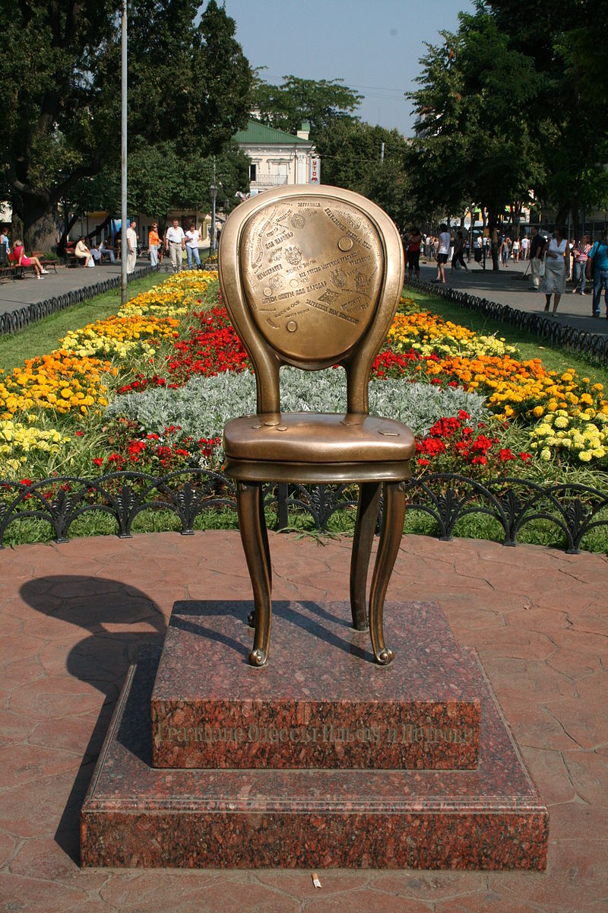

Привіт всім! Вітаю Вас на своєму сайті! Давайте знайомитися?

Про мене
Мене звуть Альона, мені 30 років і за освітою я педагог-логопед.
Хобі та робота
- Я цікавлюся багато чим, що мене оточує, але серед моїх фаворитів:
- Музика:
- Фортепіано.
- Вокал.
- Іноземні мови:
- Англійська мова.
- Румунська мова.
- Вірменська мова.
- Психологія:
- Вікова психологія.
- Психологія особистості.
- Психологія відносин.
- Програмування:
- Верстка сайтів.
- JavaScript.
Останнім пунктом я зацікавилася після того, як випадково потрапила на відео Євгенія Андріканіча. Тому пропоную і Вам завітати на його сайт: Фрілансер по життю!
Моя Одеса
Моє рідне місто - це прекрасна Одеса. Хочу трошки про неї розповісти!
Історичний центр Одеси включено до списку ЮНЕСКО
Вперше до списку UNESCO Creative Cities Network (UCCN) Одеса долучилася у 2019 році як "Місто літератури".
А 2023 року 25 січня історичний центр Одеси включили до списку Світової спадщини ЮНЕСКО. Цього разу за вражаючу архітектуру.
Скульптури котів по місту
Налічується 21 скульптура присвячена котам. Відомі металеві котики сидять на вулиці Генерала Петрова, Торговій, провулку Маяковського, пляжі Ланжерон, у Парку Перемоги тощо. Пройдіться містом і спробуйте знайти всіх котиків, а по дорозі ви побачите ще більше цікавинок.
Площа Остапа Бендера
Мініатюрна площа в Міському Саду, найменьша у світі, посеред якої знаходиться бронзовий стілець - пам'ятник письменникам Ільфу і Петрову. Символ відомого твору "12 стільців".
Незвичайні пам'ятники
- Окрім "стільця" і "котиків" в Одесі ще безліч незвичайних пам'ятників. Наприклад:
- Пам'ятник Стіву Джобсу на вулиці Новосельського. Встановлений за ініціативою студентів технічного університету.
- Пам'ятник Дарту Вейдеру. Знаходиться на території заводу Прессмаш.
- Рибалка Соня. Скульптура в рибному ряді ринку Привоз, що уособлює культурне бачення міста.
Зв'язатися зі мною
Щоб не загубити зв'язок, я пропоную написати мені у Discord: для цього тегніть @helen_gusar у чаті і я відповім Вам, щойно буду онлайн.